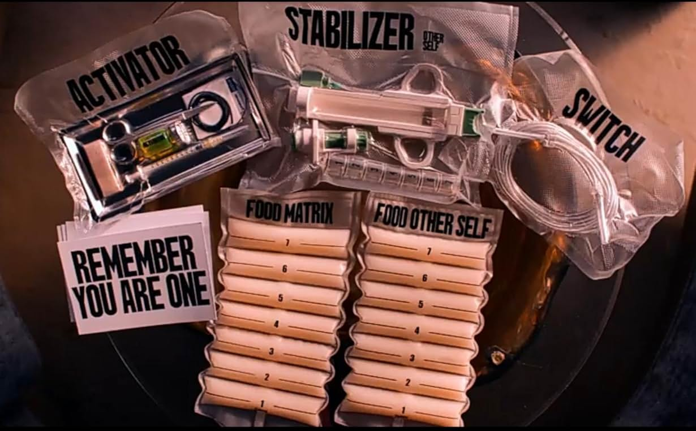
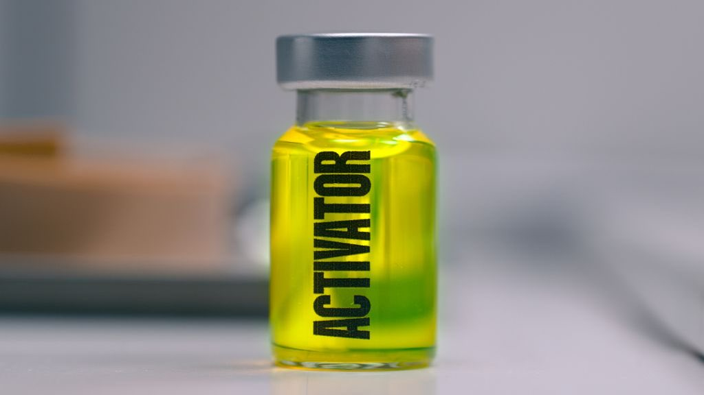
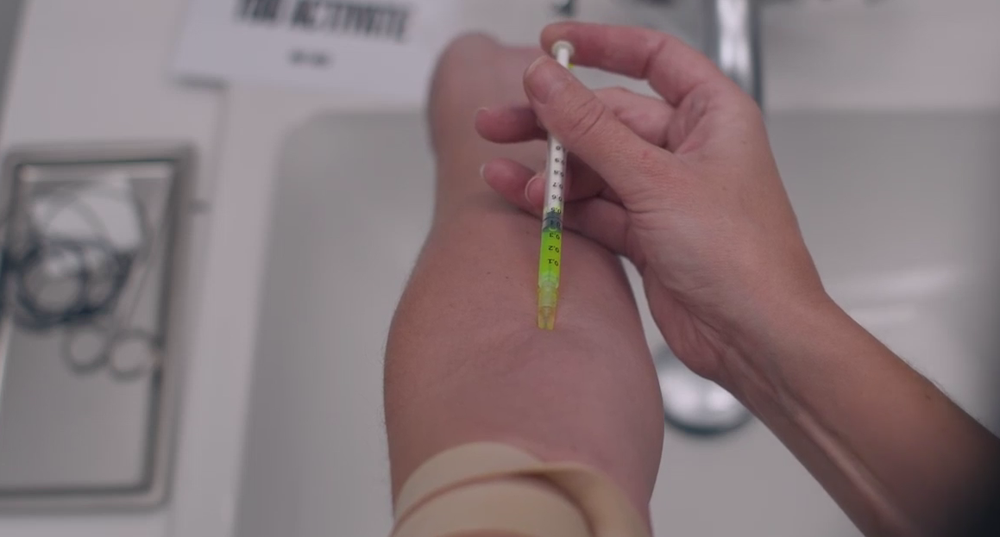
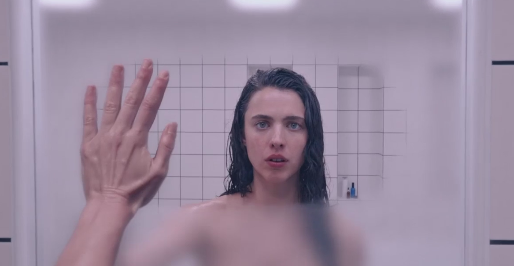
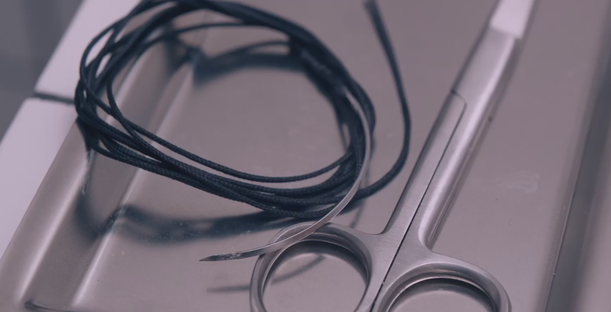
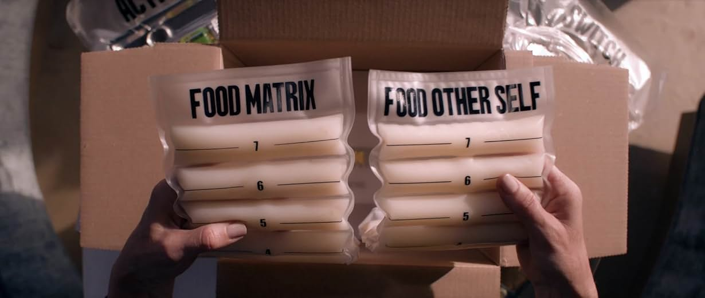
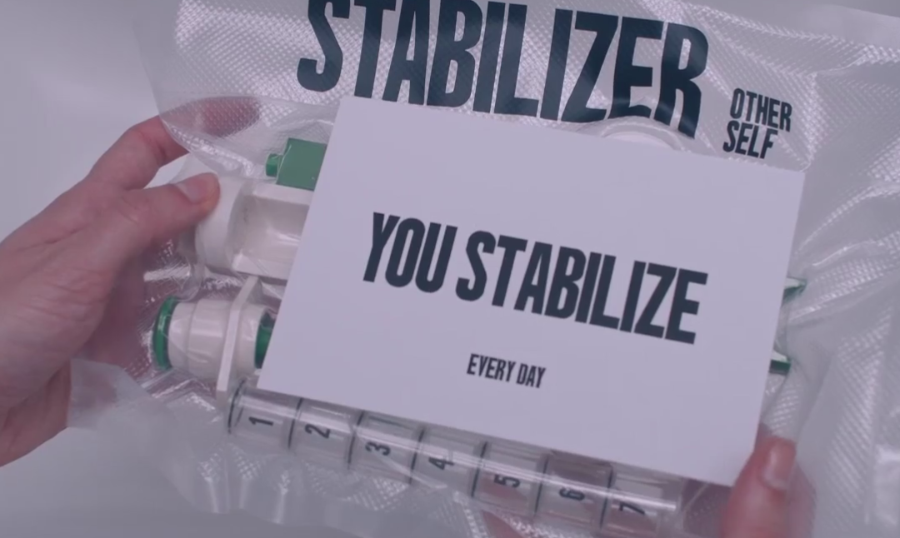
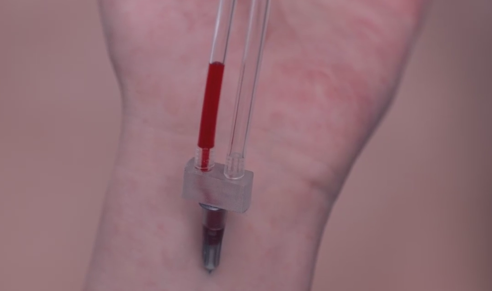
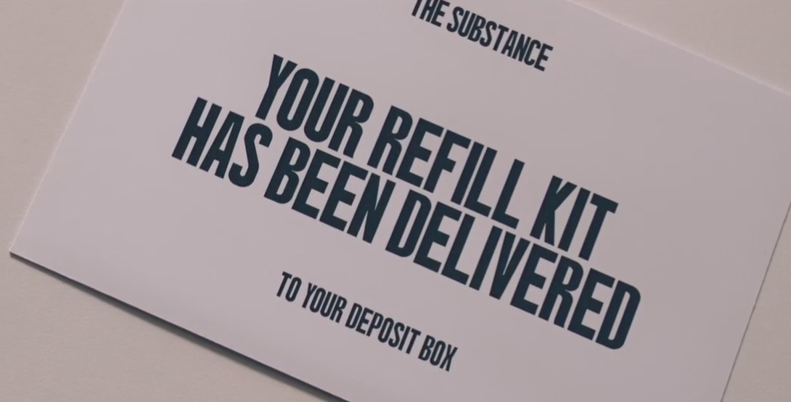
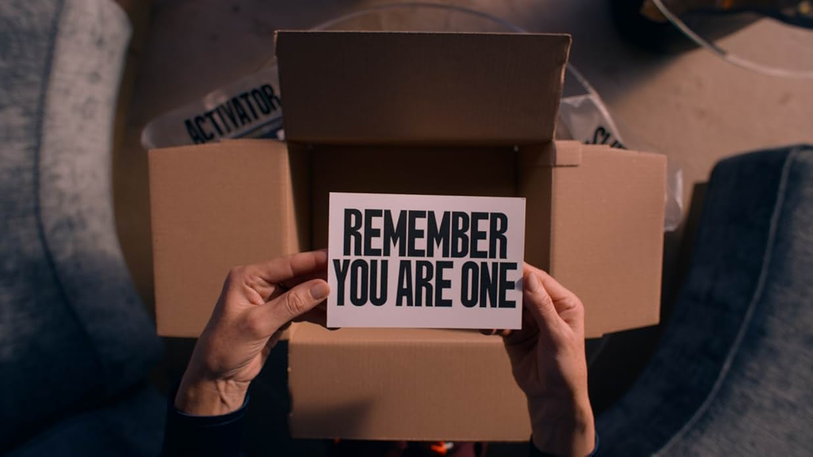

Olá, usuário!
TUTORIAL
PRIMEIRO PASSO: ATIVADOR
Passo 1:
Esta é a substância, o primeiro passo para sua vida nova, ela é essencial para que sua versão mais jovem se manifeste.
SEGUNDO PASSO: INJETAR A SUBSTÂNCIA
Passo 2:
A substância é intravenosa, necessitando que o usuário injete diretamente em um veia.
TERCEIRO PASSO: MANIFESTAÇÃO
Passo 3:
Caso os passos anteriores forem realizados com sucesso, a sua versão mais jovem deverá seguir os próximos passos daqui em diante.
QUARTO PASSO(CLONE): COSTURA
Passo 4:
O clone deverá realizar a sutura da ferida deixada após o processo de inicialização.
QUINTO PASSO (CLONE): ALIMENTAÇÃO
Passo 5:
Para que a troca seja respeitada, enquanto a matrix (ou o clone) se encontrão em estado adormecido, é de extrema importância que um pacote de comida intravenosa (que veio com o kit) esteja conectado à matrix/clone (o pacote têm duração de 7 dias).
SEXTO PASSO(CLONE): ESTABILIZADOR
Passo 6:
Para a sobrevivência do clone é necessário estabilizar DIARIAMENTE, retirando suco vital pela coluna vertebral e utilizando um dos injetores para aplicar (geralmente em tecido muscular).
SÉTIMO PASSO: TROCA
Passo 7:
A troca é extremamente importante, sendo o momento em que você estará indo de volta para o corpo da matrix, para que assim seja feito o procesSo de recuperação do suco vital(que só ocorre quando a matrix está acordada) ou indo para o corpo do clone para que assim possa viver sua nova realidade.
OITAVO PASSO: REPOR ALIMENTO
Passo 8:
Caso esteja aproveitando sua nova vida, é provável que irá querer continuar, necessitando assim de mais alimento para quando estiver em estado adormecido, apenas ligue no número exclusivo no seu cartão e assim saberemos em qual caixa colocar.
AVISO IMPORTANTE
SEJA BEM-VINDO(A) E APROVEITE SUA NOVA VIDA!
E lembre-se: não existe "ele"/"ela", apenas "você", respeite a ordem.
YOU ARE ONE.